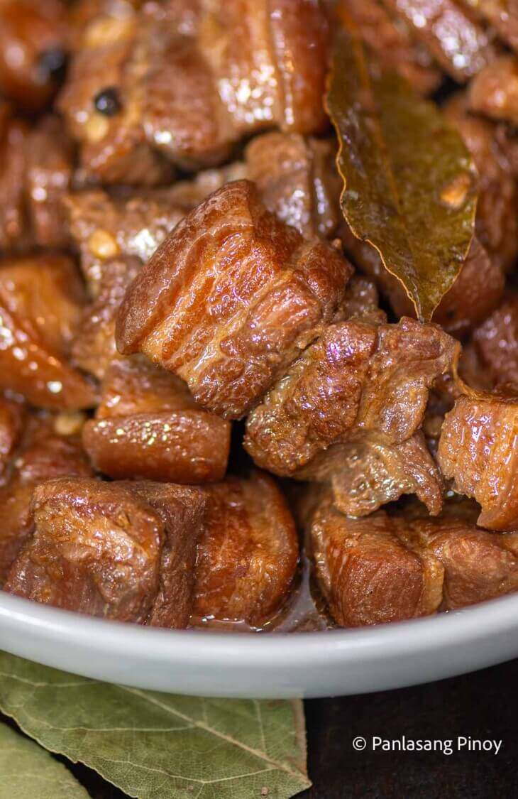

Pork Adobo

Ingredients
- 2 lbs pork belly
- 2 tablespoons garlic
- 5 dried bay leaves
- 4 tablespoons vinegar
- 1/2 cup soy sauce
- 1 tablespoon peppercorn
- 2 cups water
- Salt to taste
Instructions
- Combine the pork belly, soy sauce, and garlic then marinade for at least 1 hour
- Heat the pot and put-in the marinated pork belly then cook for a few minutes
- Pour remaining marinade including garlic.
- Add water, whole pepper corn, and dried bay leaves then bring to a boil. Simmer for 40 minutes to 1 hour
- Put-in the vinegar and simmer for 12 to 15 minutes
- Add salt to taste
- Serve hot. Share and enjoy!